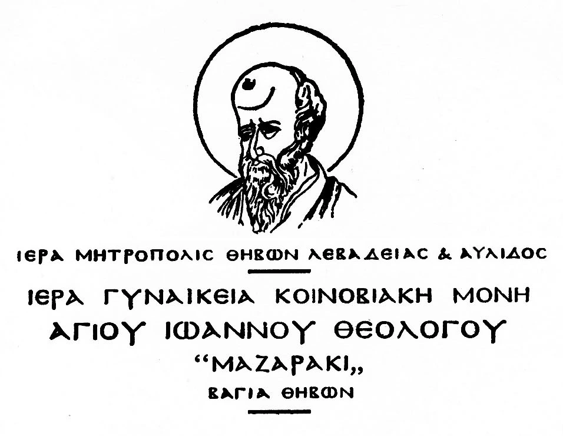

Επανασύσταση ως γυναικεία Μονή
Η Μονή επανασυστάθηκε και επανέλαβε τη λειτουργία της ως γυναικεία Μονή.
Ιστορία και ταυτότητα
Η πορεία ενός ιστορικού μοναστηριακού τόπου στη γη της Βοιωτίας.
Η ίδρυση της Μονής ανάγεται στον 16ο αιώνα. Ο ιστορικός ναός οικοδομήθηκε με βυζαντινό αρχιτεκτονικό χαρακτήρα και με χρήση τοπικής πέτρας, δεμένος οργανικά με το φυσικό τοπίο.
Τα γεγονότα του 1821 άφησαν το αποτύπωμά τους στην πορεία της Μονής. Το 1833 η λειτουργία της διακόπηκε.
Χρονολόγιο
Η Μονή επανασυστάθηκε και επανέλαβε τη λειτουργία της ως γυναικεία Μονή.
Η σημερινή αδελφότητα εγκαταστάθηκε στη Μονή, με την πνευματική φροντίδα του Μητροπολίτη Νικοδήμου Γραικού και τη συμβολή του πατρός Μιχαήλ Καρδαμάκη.
Επίσημο τεκμήριο
Η αυθεντική αυτή εικόνα παρουσιάζεται αυτούσια, ως τεκμήριο της επίσημης ταυτότητας της Ιεράς Μονής, χωρίς επέμβαση ή ανασχεδιασμό.

Φωτογραφικό αρχείο